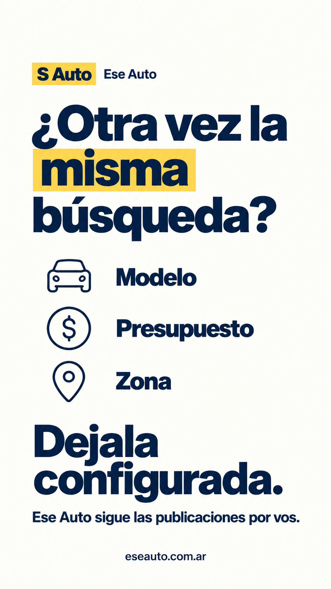
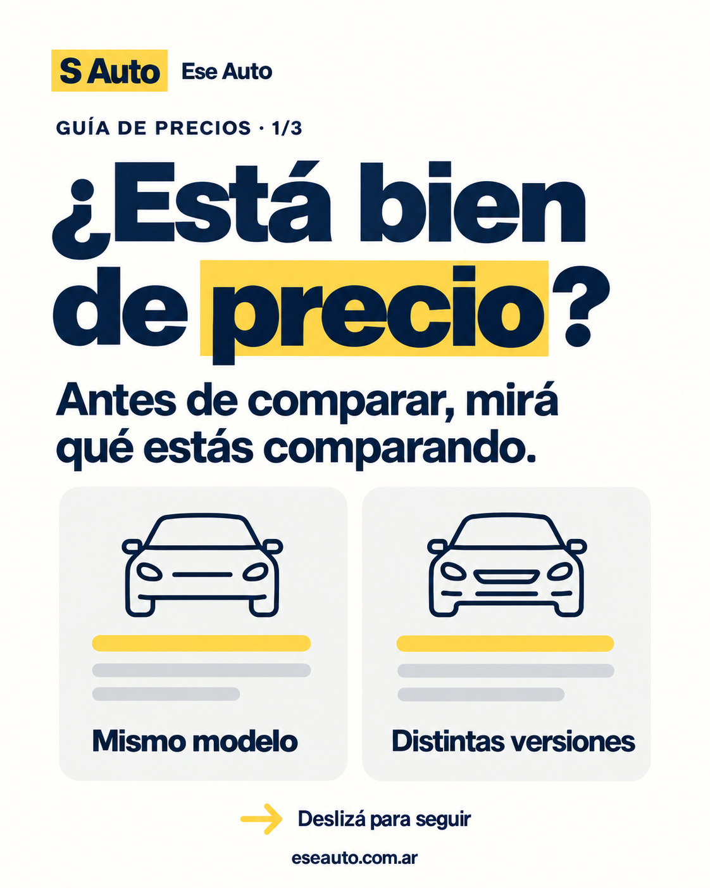
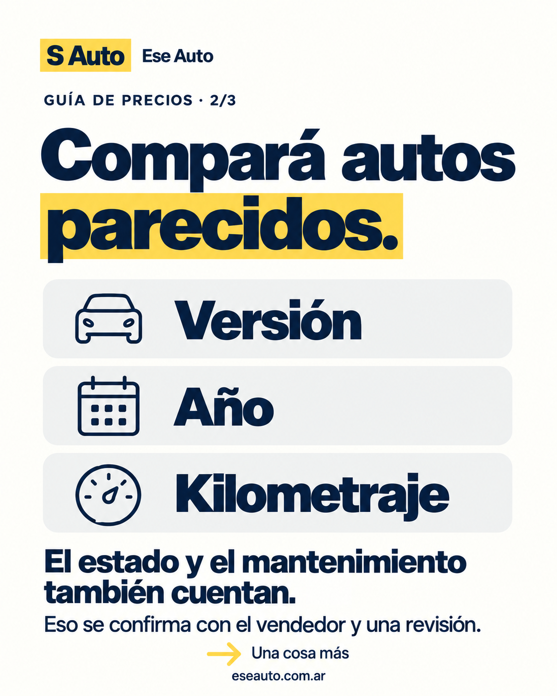
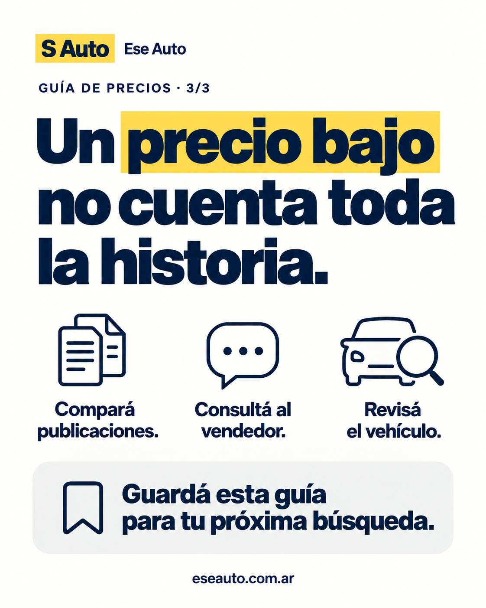
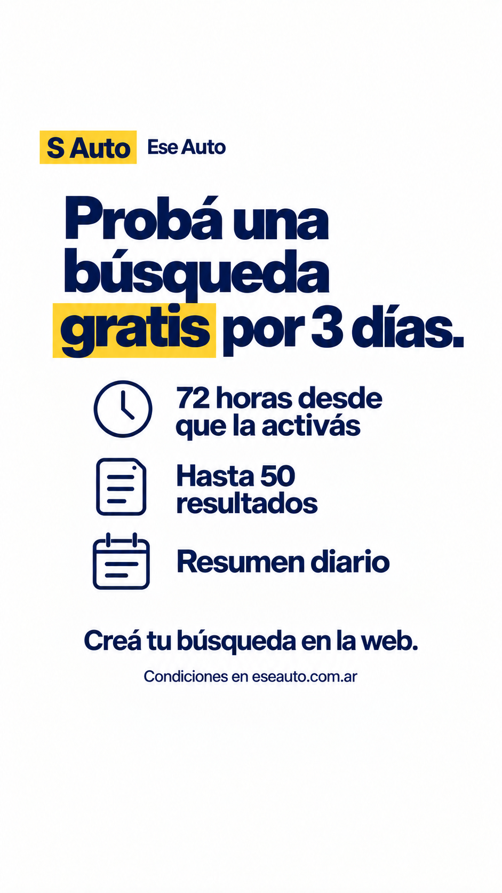

Ese Auto · Miércoles 7 y jueves 8 de octubre
Horarios de Argentina · Continuación del lanzamiento del lunes 5 y martes 6 · Preparado el 5 de octubre de 2026.
Miércoles: reconocer el problema y llevar a configurar una búsqueda. Jueves: enseñar a comparar precios y conseguir guardados útiles. Las publicaciones salen desde @eseauto.ar y @eseautoar. Juan responde las consultas que lleguen a su post personal; la marca sostiene el contenido de estos dos días.
Esta guía continúa la estrategia de 30 días y la guía del lunes y martes. Adaptamos P05 al miércoles y adelantamos P06 al jueves. La secuencia queda: presentación → cómo funciona → problema cotidiano → comparación de precios. Con el miércoles dedicado a historias, el feed tiene tres publicaciones de lanzamiento: lunes, martes y jueves.
Los horarios son una hipótesis inicial. Si no podés responder durante unos 20 minutos después, mové la tanda completa al momento en que puedas atender.
1. Qué revisar antes de publicar
- Si todavía no publicaste la presentación y el carrusel de cómo funciona, completá esa base antes de esta secuencia. No amontones las cuatro piezas en un día.
- Instagram: bio con «Probá una búsqueda gratis por 3 días ↓», enlace a la web y contacto comercial contacto@eseauto.com.ar. X: web visible y presentación fijada. No cambiamos estos perfiles en esta tarea.
- Abrí los enlaces de este paquete y comprobá que llegan a la web. El enlace dirige a la portada y desde allí a «Crear mi búsqueda»; no contamos una visita como búsqueda activada.
- Usá la nueva historia 05. La placa del paquete anterior que afirma «Las altas pagas están en lista de espera» quedó desalineada con la web pública revisada el 5 de octubre, que ahora muestra contratación. Esta revisión no confirma el cobro ni la activación de planes: las piezas nuevas se concentran en la prueba y sus condiciones verificadas.
- Si esa placa anterior ya está en el destacado «Prueba», reemplazala por la nueva. Revisá también cualquier respuesta fijada que mencione la lista de espera antes de reutilizarla.
Meta Ads: $0 para este calendario. No hace falta financiar cada publicación. La prueba paga del plan general se prepara después de comprobar el recorrido, acordar el presupuesto y verificar la medición. La existencia de Ads Manager no demuestra esas tres cosas.
2. Calendario
| Día y hora | Cuenta | Acción | Material |
|---|---|---|---|
| Miércoles 7 · 12:30 | Instagram y X de marca | Revisar preguntas del martes y obstáculos de registro | 10 minutos; responder consultas reales |
| Miércoles 7 · 19:30 | Instagram @eseauto.ar | Historia: repetir la búsqueda | Imagen 01 |
| Miércoles 7 · 19:33 | Instagram @eseauto.ar | Encuesta nativa sobre etapa de búsqueda | Texto de la sección 3 |
| Miércoles 7 · 19:36 | Instagram @eseauto.ar | Historia de prueba con sticker real de enlace | Imagen 05 + enlace del miércoles |
| Miércoles 7 · 19:45 | X @eseautoar | Post sobre la búsqueda repetida, solo texto | Copy del miércoles |
| Miércoles 7 · 19:50–20:10 | Cuentas de marca | Responder y participar en conversaciones pertinentes | Rutinas de la sección 6 |
| Jueves 8 · 12:30 | Instagram @eseauto.ar | Leer resultados de encuesta y preguntas | Ajustar respuestas, no inventar estadísticas |
| Jueves 8 · 19:30 | Instagram @eseauto.ar | Carrusel de tres placas: comparar precios | 02 → 03 → 04 + caption |
| Jueves 8 · 19:45 | X @eseautoar | Post breve de criterio para comparar usados | Copy del jueves |
| Jueves 8 · 20:00 | Instagram @eseauto.ar | Compartir el carrusel a historias | Desde el post publicado |
| Jueves 8 · 20:05 | Instagram @eseauto.ar | Historia de prueba con enlace del jueves | Imagen 05 |
| Jueves 8 · 20:10–20:30 | Cuentas de marca | Responder consultas y registrar qué contenido llevó a una acción | Rutinas y CSV |
Facebook, si ya existe la página Ese Auto: publicar el carrusel el jueves a las 19:35 como tres fotos en orden, con la adaptación de abajo. No hace falta abrir otra cuenta para cumplir este calendario.
X personal @JuanCapurro12: sin nueva publicación promocional el miércoles o jueves. Si alguien comenta tu lanzamiento, respondé desde tu voz; las dudas de uso pueden continuar con @eseautoar. La próxima intervención personal necesita una novedad o aprendizaje real.
3. Miércoles · Instagram
Historia 1 · El problema
Subir: 01-miercoles-historia-busqueda.png.

La imagen dice «¿Otra vez la misma búsqueda?» y «Dejala configurada». No agregues un párrafo encima ni otro llamado a la acción. La siguiente historia abre una conversación.
Historia 2 · Encuesta nativa
Crear directamente en Instagram: fondo azul de la marca, texto blanco y el sticker de encuesta. Es contenido nativo, no otra imagen del paquete.
¿Ya tenés modelo en mente?
Opciones del sticker:
- Sí, uno en mente
- Estoy comparando
La encuesta distingue a quien ya puede configurar una búsqueda de quien todavía necesita orientación. Leer las respuestas; no enviar promociones privadas a quienes votaron. Un voto no es un pedido de contacto.
Historia 3 · Prueba
Subir: 05-historia-prueba-actualizada.png.

Agregar el sticker real de enlace, centrado en el espacio blanco inferior. Texto del sticker:
Crear mi búsqueda
URL del sticker del miércoles:
https://www.eseauto.com.ar/?utm_source=instagram&utm_medium=organic_social&utm_campaign=lanzamiento_20261005&utm_content=story_d3_prueba
Guardar esta placa en el destacado «Prueba». El título de la imagen mantiene el mensaje elegido: «Probá una búsqueda gratis por 3 días».
No hay publicación de feed el miércoles. El martes ya explicó el recorrido y el jueves aporta una guía que merece guardarse.
4. Miércoles · X de marca
Publicar desde @eseautoar, solo texto. Con el enlace computado como 23 caracteres, ocupa 236 de los 280 de un post estándar.
Abrís el portal. Ponés el modelo. Ajustás el precio. Al rato, otra vez. En Ese Auto dejás tu búsqueda configurada y seguimos las publicaciones por vos. Probá una búsqueda gratis por 3 días, con resumen diario. https://www.eseauto.com.ar/?utm_source=x&utm_medium=organic_social&utm_campaign=lanzamiento_20261005&utm_content=marca_d3_busqueda
Mantener fijada la presentación inicial. Este post desarrolla el problema: no vuelve a anunciar el lanzamiento.
5. Jueves · Instagram y X
Instagram · Carrusel
Seleccionar en este orden, conservando el encuadre completo:
- 02-jueves-carrusel-1.png: «¿Está bien de precio?».
- 03-jueves-carrusel-2.png: versión, año y kilometraje.
- 04-jueves-carrusel-3.png: el precio no cuenta toda la historia; guardar la guía.


Caption listo:
Dos autos del mismo modelo no siempre son una buena comparación. Antes de mirar cuál cuesta menos, revisá: • Versión: el equipamiento y la motorización pueden cambiar. • Año: compará unidades de años cercanos. • Kilometraje: miralo junto con el estado y el mantenimiento. El precio publicado es un punto de partida. Todavía hay que consultar al vendedor y revisar el vehículo. En Ese Auto comparamos precios publicados de autos parecidos para ayudarte a mirar cada opción con más contexto. Guardá esta guía para tu próxima búsqueda.
Único llamado a la acción del carrusel: guardar. La invitación a probar queda en la historia siguiente. No sumar «seguinos, compartí y comentá» al mismo cierre.
Texto alternativo por imagen:
- 02: Placa de Ese Auto en azul, blanco y amarillo. Pregunta «¿Está bien de precio?» y recomienda revisar qué se compara. Dos dibujos de publicaciones ilustran que un mismo modelo puede tener distintas versiones.
- 03: Placa de Ese Auto que recomienda comparar versión, año y kilometraje. Aclara que el estado y el mantenimiento también cuentan y se confirman con el vendedor y una revisión.
- 04: Placa de Ese Auto que dice «Un precio bajo no cuenta toda la historia». Recomienda comparar publicaciones, consultar al vendedor y revisar el vehículo; invita a guardar la guía.
Historias del jueves:
- Compartí el carrusel desde Instagram. Agregá solo este texto:
Antes de mirar cuál cuesta menos, compará estas 3 cosas.
- Subí la imagen 05 y agregá el sticker «Crear mi búsqueda» con esta URL:
https://www.eseauto.com.ar/?utm_source=instagram&utm_medium=organic_social&utm_campaign=lanzamiento_20261005&utm_content=story_d4_prueba
Dejar la presentación y el tutorial fijados. No hace falta fijar también esta guía: reservamos lugar para una futura demostración real del producto.
X · Post del jueves
Publicar desde @eseautoar, solo texto. Ocupa 261 caracteres con la regla de enlaces de X.
¿Está bien de precio? Antes de comparar dos usados, mirá versión, año y kilometraje. El estado y el mantenimiento también cuentan: eso se confirma con el vendedor y una revisión. Ese Auto compara precios publicados de autos parecidos. https://www.eseauto.com.ar/?utm_source=x&utm_medium=organic_social&utm_campaign=lanzamiento_20261005&utm_content=marca_d4_precios
Facebook · Solo si la página ya está configurada
Usar las tres imágenes y el caption de Instagram. Mantener el cierre «Guardá esta guía para tu próxima búsqueda» y añadir:
Conocé Ese Auto: https://www.eseauto.com.ar/?utm_source=facebook&utm_medium=organic_social&utm_campaign=lanzamiento_20261005&utm_content=feed_d4_precios
6. Crecimiento por cuenta
Instagram · 20 minutos por día
Antes de publicar, revisar durante 5 minutos cuentas argentinas del rubro y conversaciones de compradores. Elegir hasta tres publicaciones recientes en las que tengas algo concreto que aportar; comentar sobre la duda o el auto, sin pegar la presentación de Ese Auto.
Después de publicar, dedicar 10 minutos a contestar dudas y mensajes que sí llegaron a la marca. Usar los últimos 5 minutos para registrar preguntas repetidas y visitas al perfil/enlace que Instagram muestre. El jueves, mirar también guardados y compartidos del carrusel.
Seguir solo cuentas cuyo contenido quieras leer de forma sostenida. Evitar seguir en serie a los seguidores de otros perfiles, copiar comentarios y escribirles por privado sin una conversación previa. La meta de estos días es atraer compradores con una necesidad concreta.
X de marca · 15 minutos por día
Abrir la lista privada Radar de usados · AR para leer fuentes y temas. Complementarla con las búsquedas de conversaciones; la lista sirve como fuente, no detecta por sí sola intención de compra.
Reparto: 5 minutos de lectura, 5 para una o dos respuestas pertinentes si las hay y 5 para atender respuestas propias. Si no hay una conversación en la que aportar, no fabricar un comentario comercial.
Si alguien pide ayuda para comparar dos publicaciones, una respuesta posible:
Para compararlos miraría primero versión, año y km. Después, qué información hay de mantenimiento y estado: eso lo confirmaría con el vendedor antes de decidir.
Si alguien cuenta que está repitiendo la búsqueda y pide herramientas, podés conectar el producto:
Para eso armamos Ese Auto: dejás modelo, presupuesto y zona configurados y seguimos las publicaciones por vos. Podés probar una búsqueda gratis por 3 días.
Usar cada texto solo cuando responda a lo que esa persona dijo. No prometer que llegará primero, que el servicio rastrea publicaciones de X o que asegura encontrar un auto.
X personal · Participación puntual
Responder el hilo de tu lanzamiento si hay preguntas. No usar tu cuenta personal para replicar todos los posts de marca ni responderle a la marca como si fueras un cliente independiente.
Si preguntan por qué lo hiciste:
Lo armé para mi propia búsqueda y me ayudó a encontrar el auto que compré hace poco. Después lo llevé a una web para que lo pudiera usar cualquiera.
Si preguntan cómo usarlo:
Configurás qué usado buscás, presupuesto y zona. Si necesitás ayuda con la búsqueda, escribile a @eseautoar y lo vemos desde ahí.
No agregar modelo, precio, ahorro de tiempo ni resultados personales que no hayas confirmado.
7. Publicación y medición
Publicaría las historias y stickers desde la app de Instagram; el carrusel desde esa app o Meta Business Suite si ya permite seleccionar @eseauto.ar. X se publica desde x.com con @eseautoar seleccionado. Ads Manager se usa para anuncios; no hace falta entrar ahí para estos posts orgánicos.
Este paquete contiene textos y archivos listos. No se publicó ni programó contenido. No contamos con acceso confirmado a las estadísticas o al producto de estas cuentas en esta tarea.
Usar SEGUIMIENTO_7_Y_8_OCT.csv: tomar una lectura a las 24 horas del post y otra a las 48 si aporta información nueva. Los enlaces mantienen la campaña del lanzamiento y separan cada origen mediante utm_content.
| Día | Señal principal | Qué decisión informa |
|---|---|---|
| Miércoles | Toques al enlace y preguntas sobre configurar la búsqueda | Si el problema se entiende y lleva a explorar el producto |
| Miércoles | Respuestas a la encuesta | Qué orientación necesita quien responde; no representa todo el mercado |
| Jueves | Guardados, compartidos y consultas del carrusel | Si la guía aporta criterio que las personas quieren conservar |
| Ambos | Búsquedas activadas y coincidencias útiles, si están disponibles con evidencia | Si el recorrido y el servicio funcionan; no inferirlo de clics o registros |
Dejar vacías las métricas no disponibles. Los UTM distinguen visitas cuando la medición las conserva; no demuestran automáticamente la activación atribuida. Revisar el flujo si llegan visitas pero aparecen dudas de registro. Si hay activaciones pero pocos resultados útiles, revisar cobertura y filtros antes de comprar tráfico.
Con pocos datos, registrar cantidades y preguntas concretas. No descartar una plataforma por un único post ni fijar una meta arbitraria de seguidores.
8. Archivos y alcance
Cinco PNG: una historia de problema, tres placas de carrusel y una historia de prueba. Las historias usan proporción 9:16 y el carrusel 4:5. Las placas ilustran ideas; no muestran capturas del producto ni resultados reales. La encuesta y la historia compartida se crean con herramientas nativas de Instagram.
| Archivo | Destino |
|---|---|
| 01-miercoles-historia-busqueda.png | Primera historia del miércoles |
| 02-jueves-carrusel-1.png | Primera imagen del carrusel |
| 03-jueves-carrusel-2.png | Segunda imagen del carrusel |
| 04-jueves-carrusel-3.png | Tercera imagen del carrusel |
| 05-historia-prueba-actualizada.png | Historia con enlace de ambos días; destacado Prueba |
Imágenes producidas con la herramienta integrada imagegen, con las piezas anteriores como referencia visual. El conjunto exacto de instrucciones está en PROMPTS.json. En ARCHIVOS.json quedan dimensiones, nombres y comprobaciones del paquete.
Fuentes de verificación: web pública de Ese Auto, revisada en el navegador el 5 de octubre de 2026: prueba de 72 horas desde la primera activación, hasta 50 resultados y resumen diario; pausar o reemplazar no reinicia la prueba. Ayuda oficial de X, consultada el 5 de octubre: límite estándar de 280 caracteres.
La nueva planificación adapta el calendario, mantiene las identidades confirmadas por Juan y el estilo de los materiales anteriores. No audita pagos, cambia perfiles ni activa campañas.
Imágenes listas para subir

Descargar PNG

Descargar PNG

Descargar PNG

Descargar PNG

Descargar PNG